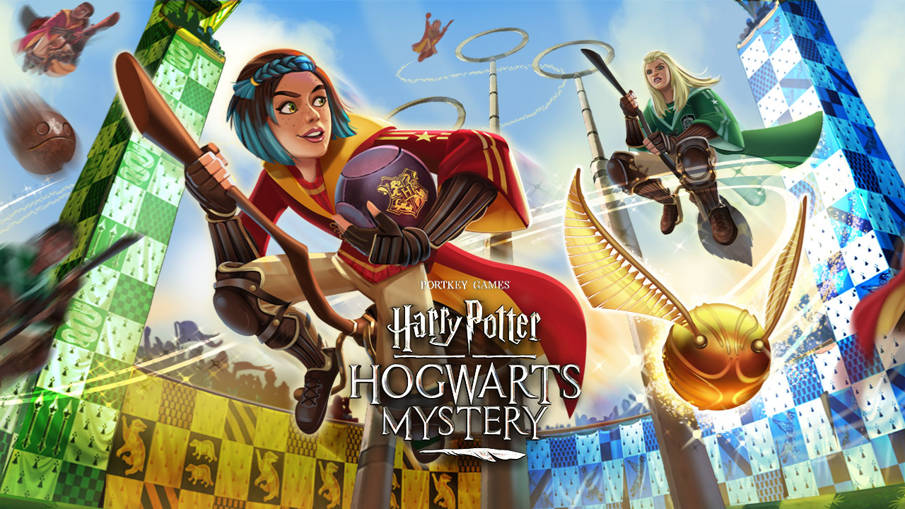
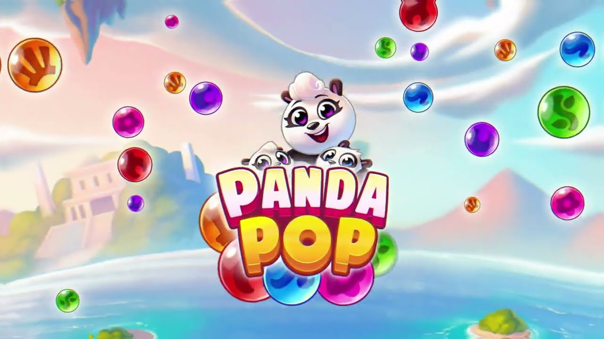
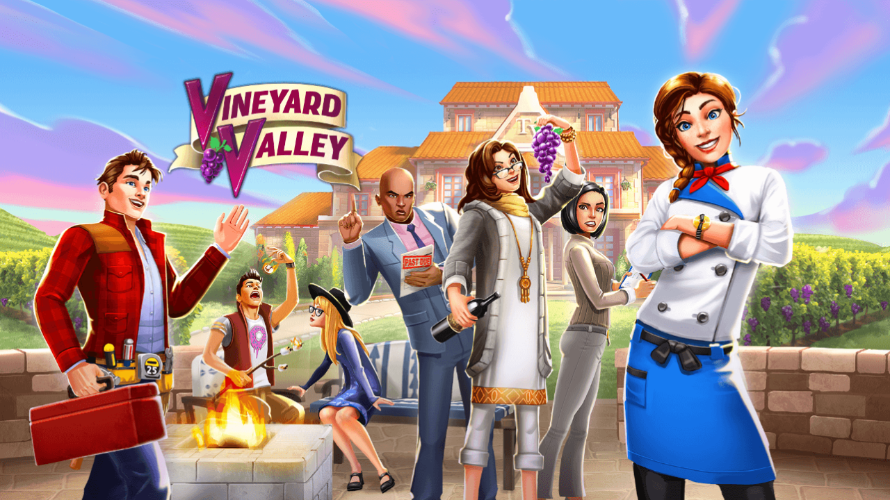
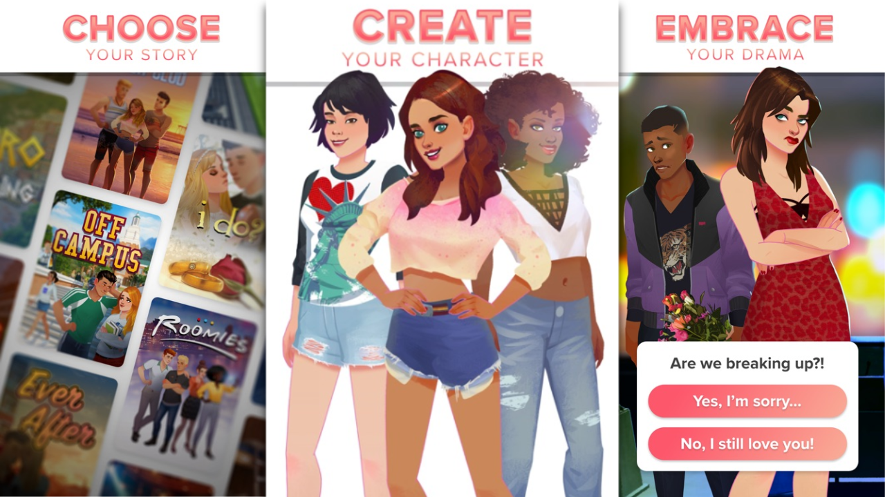

What's New:
- I've joined the Age of Empires franchise as a Senior Game Designer at CaptureAge!
PROFESSIONAL PROJECTS
Age of Mythology - Senior Game Designer

Life By You (Cancelled) - Senior Game Designer
Harry Potter Hogwarts Mystery - Senior Game Designer

Panda Pop - Game Designer

Vineyard Valley - Level Designer (contract)

Twist - Narrative Designer
